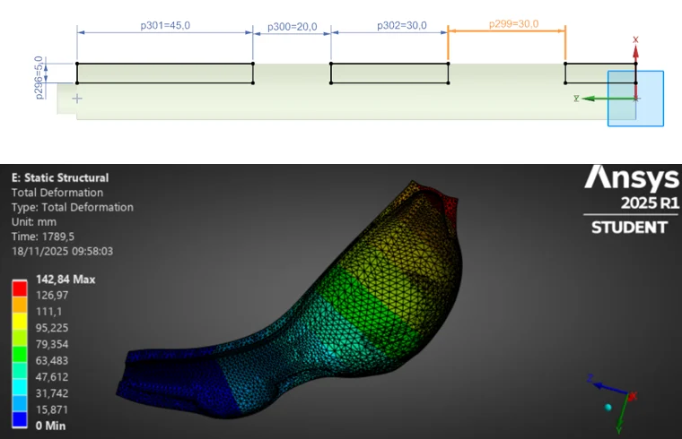
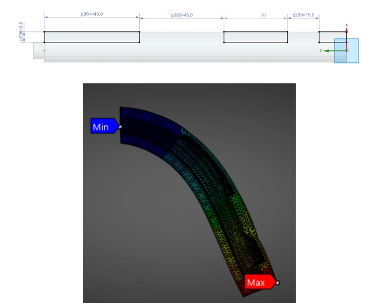
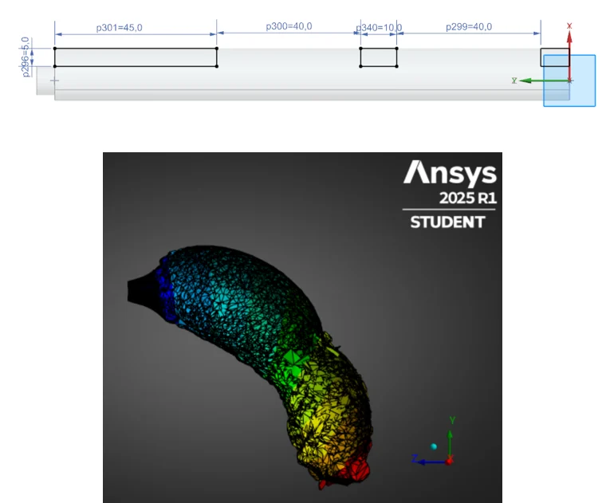

Robotic hardware
Soft tentacle gripper
Four pneumatic silicone tentacles that wrap around fragile, irregular produce — designed in hyperelastic FEA, cast in 3D-printed molds and built into a working 2-DOF robot.
- cast silicone tentacles
- 4
- payload requirement
- 200 g
- reusable casting mold
- 2-part

- I owned the tentacle: chamber geometry in FEA, the casting mold and the 3D-printed tooling.
- Silicone modeled as a 2nd-order Ogden hyperelastic material — with no official model for Dragon Skin 20 and a node-limited student license, so the FEA was used to compare layouts, not to predict exact bending.
- Modular design: each silicone tentacle can be swapped or repaired on its own. The team integrated it on a 2-DOF arm with an Arduino-controlled pneumatic circuit.
- ANSYS Workbench
- Ogden hyperelastic model
- Siemens NX
- FDM 3D printing
- Silicone casting
01
The problem
Fruit sorting is still largely manual because produce is delicate and every piece has a different shape. Rigid grippers either damage it or need a custom tool per product. The brief: a low-cost soft gripper that can pick up a small fruit (200 g) safely, on a simple robot arm.
02
Designing the tentacle in simulation
Each tentacle is a silicone finger with internal air chambers. When pressurized, the thin side stretches more than the thick side and the finger curls around the object. Getting enough curvature at a low, safe pressure depends on the chamber geometry — so I worked it out in FEA before printing anything.
- Material: Dragon Skin 20 silicone, modeled in ANSYS Workbench as a second-order Ogden hyperelastic material (incompressible, 1070 kg/m³). The manufacturer publishes no hyperelastic model, so I took the Ogden constants from values published for this silicone.
- Boundary conditions: tentacle base fixed, internal pressure applied in steps on the chamber walls.
- Design iteration: three chamber layouts (mk2 → mk3 → mk4) simulated with the same material model and loads, compared on how the finger bends.
Two limits shaped how far the simulation could be trusted. The student license caps the number of nodes, so the mesh of a large-strain, nearly incompressible part stayed coarser than I wanted; and the material constants were not fitted to our own batch. I therefore used the FEA to rank chamber layouts against each other, not to predict the exact curvature.



03
From model to cast part
Silicone parts are only as good as their mold. I designed a two-part PLA mold with a removable core that forms the air channel. The halves are screwed together so they can be opened without tearing the part and reused for every tentacle; compressed air breaks the seal between silicone and core during demolding.
The weak point was the core. On an FDM-printed mold it did not sit perfectly centered, so the wall thickness — the parameter the whole FEA was about — varied along the cast tentacle. Tighter-tolerance molds and pressure casting would give more repeatable parts.

04
The full robot
The team integrated four tentacles on a gripper hub mounted on a 2-DOF arm. The gripper is fully modular: each silicone tentacle is mounted on its own, so a damaged one can be replaced or repaired without rebuilding the rest. A torque analysis showed the shoulder needed 2.40 N·m — more than the MG996R servos can deliver directly — so the arm uses belt reductions of 4 and 1.5. An Arduino switches the pump and valves through MOSFETs.

05
Results and what I'd do next
The prototype grasps and lifts the target objects with the four tentacles — a working proof of concept of the design.
The team's critical review found the shoulder not stiff enough, the custom timing belts unreliable, and no active pump regulation. On the tentacle, the next steps are: cast in machined or tighter-tolerance molds with a positively located core, use pressure casting, and build a pressure–bending test rig to fit the Ogden constants to our own silicone and check the FEA against the real part.
06
Resources
Photos and figures are from the team's public build guide.